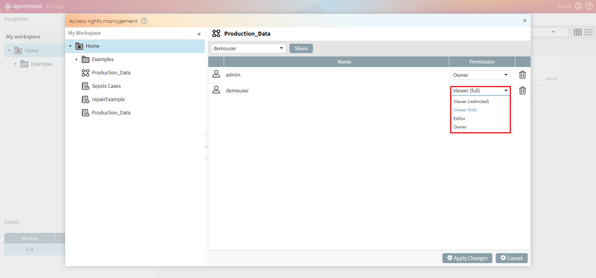

Sharing and Access Rights
Apromore allows us to share files/folders. Each file/folder has a particular security level.
Note
By default, each file/folder is created and saved as private and can be accessed, edited, deleted only by the owner.
It is possible to change a file/folder’s security level by selecting it in the workspace and clicking the button.
{kind=link}
Share an event log
To share an event log, select the log from the workspace and click on the button.
File Sharing window consists of two sections: List of Users and Associated artifacts.
Note
To share all the artifacts (filters/dashboards) associated with a log, set the Viewer (full) permission to the user. To share only specific artifacts(filters/dashboards) associated with a log, set the Viewer (restricted) permission to the user and tick the boxes next to the artifacts to be shared.
We can find a user or group with whom we want to share the file using the Type in a user or group name textbox.
Click on Share.

The selected user appears in the users’ list.
We can see the list of associated artifacts automatically shared with a user in the Associated Artifacts section.
Note
Only an owner or editor can edit/rename/delete the associated artifacts.
To change the access rights for a particular user, click on the Permission drop-down list and select the desired permissions.
Finally, click on Apply Changes.

To revoke access for a particular user, click on the button.
{kind=link}

Share a process model
To share a process model, select it from the workspace and click on the button.

We can find a user or group with whom we want to share the model using the Type in a user or group name textbox.
Click on Share.
The selected user appears in the users’ list.
To change the access rights for a particular user, click on the Permission drop-down list and select the desired permissions.
Finally, click on Apply Changes.
To revoke access for a particular user, click on the button.

Share a folder
To share a folder, select the folder from the workspace and click on the button.
We can find a user or group with whom we want to share the folder using the Type in a user or group name textbox.
Click on Share.
The selected user appears in the users’ list.

To change the access rights for a particular user, click on the Permission drop-down list and select the desired permissions.
Finally, click on Apply Changes.

To revoke access for a particular user, click on the button.

Note
For security reasons, the files in the folder are not automatically shared. To share a file within a folder, we must select it individually and provide access.
Access Rights Management
Access Rights Management functionality provides the administrators with a comprehensive view of all the files and folders along with the users and their access rights. The administrator can easily browse through the permissions of the files/folders.
Note
Only a user with administrator rights can access the Access Rights Management functionality.
To share files/folders, click on the  button.
button.

After the Access rights management window opens, select the file/folder to be shared and enter the username you intend to share the file/folder with in the Type in a user or group name textbox.
Click on Share to share the file/folder.
On clicking Share, the user appears in the users list.
To change the access rights for a particular user, click on the Permission drop-down list and select the desired permissions.

Finally, click on Apply Changes.

To revoke access for a particular user, click on the button.